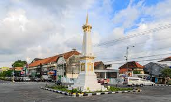

Bali
Bali, dikenal juga sebagai Pulau Dewata adalah sebuah provinsi di Indonesia yang terletak pada bagian barat Kepulauan Nusa Tenggara dengan ibu kota di Kota Denpasar
1234
1500 viewers

1234
1600 viewers
Jogja
Kota Yogyakarta adalah ibu kota sekaligus pusat pemerintahan dan perekonomian dari provinsi Daerah Istimewa Yogyakarta, Indonesia. Kota ini adalah kota yang mempertahankan konsep tradisional dan budaya Jawa.
1234
1600 viewers

Bandung
Kota Bandung adalah sebuah kota sekaligus menjadi ibu kota provinsi di Provinsi Jawa Barat, Indonesia. Kota Bandung juga merupakan kota terbesar keempat di Indonesia, setelah Jakarta, Kota Surabaya, dan Kota Medan.
1234
1300 viewers